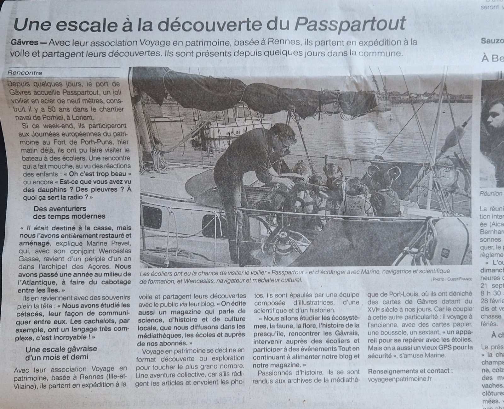

<div class="boat-card" header="Voyage en Patrimoine">

    <div style="min-height: 400px; overflow-y: auto;">
        <div class="tab" style="margin-top: 30px; margin-bottom: 10px; display: grid; grid-template-columns: auto auto auto auto auto auto auto auto auto auto auto;"> <!-- TODO Improve the grid-template... -->
            <button class="tablinks tab-active" onclick="openTab(event, 'vep-01');" title="Sommaire">Sommaire</button>
            <button class="tablinks" onclick="openTab(event, 'vep-02');" title="Actualit&eacute;s">Actualit&eacute;s</button>
            <button class="tablinks" onclick="openTab(event, 'vep-03');" title="Soutenir le projet">Contacts</button>
        </div>

        <div style="min-height: 300px; max-height: 450px; overflow-y: auto;">
            <div id="vep-01" class="tab-section" style="display: block;">

                <div style="display: grid; grid-template-columns: auto auto;">
                    
                    <div style="padding: 14px;">
                        <h2>Voyage en Patrimoine</h2>
                        <h3>Dans le sillage des &eacute;toiles</h3>
                        Embarquez avec nous pour vivre une exp&eacute;dition &agrave; la voile.<br/>
                        Une curiosit&eacute; voyageuse.<br/>
                        Voir <a href="https://voyageenpatrimoine.fr/le-magazine/" target="ext">le magazine</a>.<br/>
                    </div>
                </div>
                <div>
                    D&eacute;couvrir et apprendre en s'ouvrant aux autres et en se questionnant sur ce qui nous entoure.
                    C'est tout cela, l'aventure Voyage en Patrimoine. Nous allons &agrave; la rencontre des chercheurs et des
                    habitants de diff&eacute;rents pays pour vous parler de culture et de sciences, s'&eacute;merveiller, et surtout,
                    d&eacute;velopper sa curiosit&eacute;.

                    <ul>
                        <li>Un programme &eacute;ducatif agr&eacute;&eacute; &Eacute;ducation Nationale</li>
                        <li>Un magazine pour les particuliers</li>
                        <li>Des animations pour les &eacute;tablissements culturels</li>
                    </ul>
                </div>
            </div>

            <div id="vep-02" class="tab-section" style="display: none;">
                <a href="./passpartout/passpartout.01.jpeg" target="_blank"></a>
            </div>

            <div id="vep-03" class="tab-section" style="display: none;">
                <div>
                    <h2>Plus d'infos...</h2>
                    R&eacute;f&eacute;rents et porteurs du projet : Marine Prevet et Wencelas Gasse</br/>
                    Email : contact@voyageenpatrimoine.fr<br/>
                    Site web : <a href="https://voyageenpatrimoine.fr" target="ext">https://voyageenpatrimoine.fr</a><br/>
                    <a href="https://www.facebook.com/story.php?story_fbid=790652596422331&id=100064327946932" target="FB" title="FaceBook"></a>
                </div>
            </div>
        </div>
    </div>
</div>
